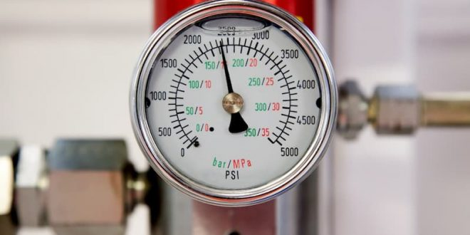

Los sensores medidores de presión son muy utilizados en el sector agrícola para conocer, por ejemplo, el flujo de agua de un lugar y para enviar una notificación a los equipos responsables cuando algo necesite ser corregido. Los sensores de presión tienen otras aplicaciones, como en vehículos inteligentes para determinar la fuerza.